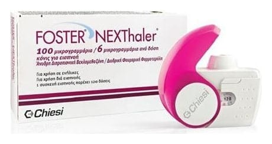

Foster Nexthaler 100/6 mcg Kuru Toz İnhaler, 120 doz

Ne için kullanılır
KT · Bölüm 1 FOSTER NEXTHALER ağızdan solunan ve kuru toz halindeki etkin maddelerin ak- ciğerlerdeki havayollarına iletimini sağlayan inhaler tipi bir ilaçtır.
FOSTER NEXTHALER, 120 doz içerir ve her soluma dozunda 100 mikrogram anhidröz beklometazon dipropiyonat ve 6 mikrogram formoterol fumarat dihidrat bulunur.
FOSTER NEXTHALER iki ayrı aktif (etkin) madde içerir; anhidröz beklometazon dipropiyonat ve formoterol fumarat dihidrat.
o Birinci etkin madde olan anhidröz beklometazon dipropiyonat; kortikosteroid adı verilen ve akciğerlerdeki hava yollarının iltihabını/inflamasyonunu gideren bir ilaç grubunun üyesidir ve akciğerlerdeki havayolları duvarında oluşan şişkinlik, hassasiyet ve iltihabı giderir.
“ o İkinci etkin madde olan formoterol fumarat dihidrat ise uzun-etkili bronkodilatörler (bronş genişleticileri) olarak adlandırılan ilaç grubu üyesidir ve akciğerlerdeki hava yollarının duvarlarında bulunan kasları gevşeterek genişlemelerini sağlar.
FOSTER NEXTHALER 18 yaştan itibaren astım ve KOAH tedavilerinde düzenli ola- rak kullanılır. Astım tedavisinde 3. basamaktan itibaren astım belirtilerinin düzeltilme- si ve kontrol altına alınması, orta ve ağır KOAH hastalarında ise belirtilerin ve atak sıklığının azaltılmasında kullanılır.